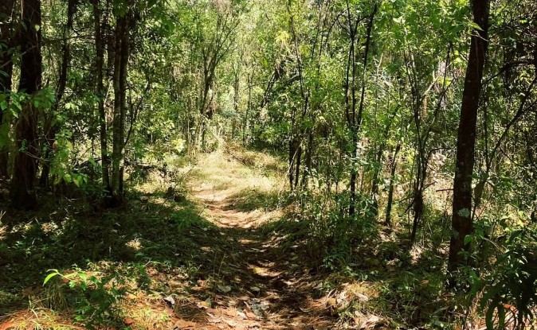

CERRO COLORADO
Cerro Colorado, una comunidad del municipio de Valle de Bravo, Estado de México, para que tengas información suficiente para una
Ubicacion geografica
Cerro Colorado es una de las localidades reconocidas oficialmente dentro del municipio de Valle de Bravo, situado en la parte occidental del Estado de México. El municipio forma parte de una región conocida por sus montañas, bosques, cuerpos de agua y comunidades rurales. País: México. Estado: Estado de México. Municipio: Valle de Bravo. Localidad: Cerro Colorado. Entorno: rural, con paisajes de montaña y vegetación característica de la región. Vías de acceso: existen caminos que comunican la zona de Cerro Colorado y La Compañía con otros puntos del municipio
.Geografia y caracteristicas naturales
El entorno de Cerro Colorado forma parte del paisaje montañoso de Valle de Bravo. La región presenta elevaciones, laderas, áreas arboladas y terrenos rurales que pueden utilizarse para actividades agrícolas y otras actividades propias de las comunidades. Principales características geográficas: Relieve: predominan los paisajes irregulares y montañosos propios de la región. Vegetación: en los alrededores de Valle de Bravo existen bosques y distintas comunidades vegetales; la vegetación concreta cambia según la altitud, la humedad y el uso del suelo. Clima: el municipio presenta condiciones templadas en buena parte de su territorio, aunque pueden variar entre las zonas altas y bajas. Paisaje: combina áreas naturales, caminos rurales y espacios habitados. Relación con la naturaleza: el entorno ofrece oportunidades para apreciar el paisaje y conocer la biodiversidad regional.
Riqueza cultural y tradiciones
La riqueza cultural de una comunidad no se limita a sus monumentos. También incluye las costumbres familiares, la religión, las celebraciones, la gastronomía, las formas de hablar, los conocimientos tradicionales y la convivencia entre vecinos. En Cerro Colorado, estos elementos deben investigarse directamente para identificar cuáles se conservan y cómo han cambiado con el tiempo. A. Tradiciones religiosas En la localidad se encuentra la Parroquia de la Inmaculada Concepción, un espacio de culto católico y reunión para la comunidad. La vida religiosa puede formar parte de la identidad de los habitantes mediante actividades como misas, celebraciones patronales, reuniones comunitarias y ceremonias familiares. No obstante, para señalar la fecha y las actividades exactas de la fiesta patronal de Cerro Colorado, es necesario confirmarlas con la parroquia o con sus habitantes.
Por que es un lugar turistico
La cascada velo de novia atrae a visitantes que buscan alejarse del ruido de la ciudad y pasar tiempo en el entorno natural. Es un lugar adecuado para excursiones familiares, paseos escolares y actividades de observacion de la naturaleza. Se recomienda no dejar basura, permanecer en los cenderos habilitados y tener cuidado con las superficies humedas

video
Cultura e identidad de la comunidad"La cultura regional se contruye mediante las costumbres familiares, el trabaja, la gastronomia, las fiestas y los conocimientos que se transmiten entre generaciones Características principales:
La vida rural
Actividades relacionales con el campo y el aprovechamiento responsable de los recursos naturales.
La convivencia comunitaria.
Colabociaon entre vecinos y familias en actividades colectivas
Los conocimientos tradicionales.
Preparacion de alimentos, elaboracion de artesanias y conocimiento de planatas y hongos.
Gastronomia tipica
La gastronomia de Cerro Colorado combina ingredientes del campo, productos de temporada y recetas tradicionales del Estado de Mexico..
Trucha
Es uno de los alimentos asociados con la gastronomia de Valle de Bravo. Puede prepararce a la plancha, al homgo, empapeladas o con diferentes salsas y acompañamientos.
Sopa de hongos
Se prepara con hongos comestibles, hierva, cebolla, ajo y otros ingredientes, tiene especial relacion con la temporada de lluvias.
Mole
platillo tradicional elaborado con una salsa de diferentes chiles, especies y otros ingredientes.